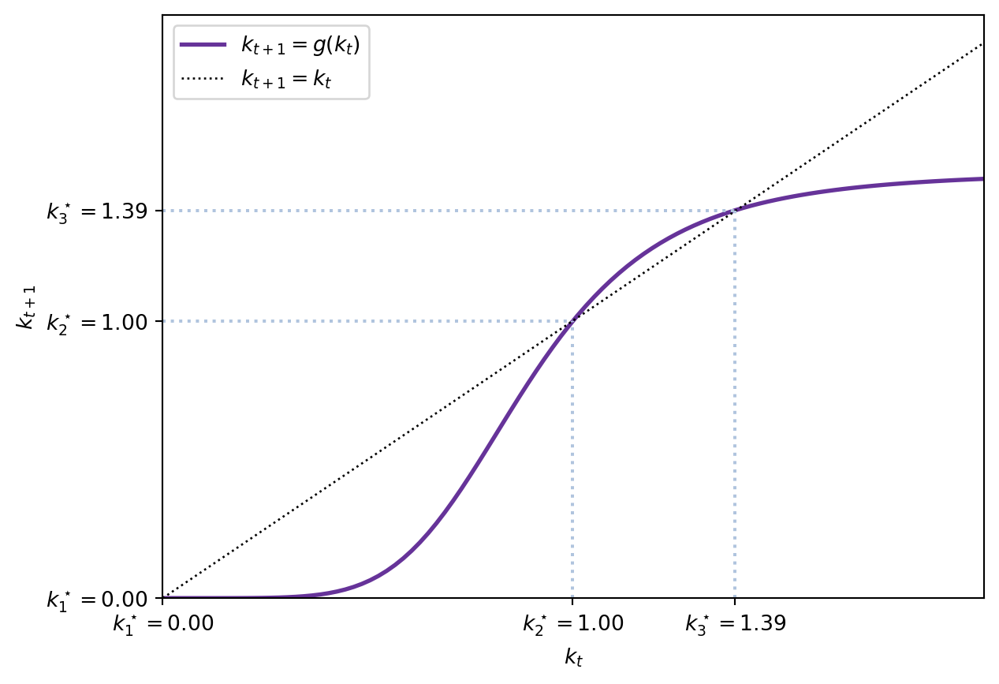
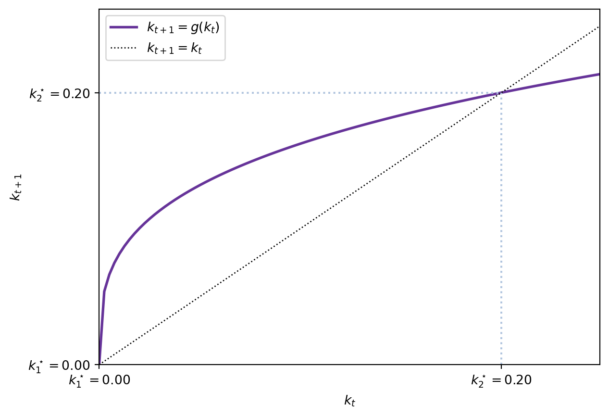
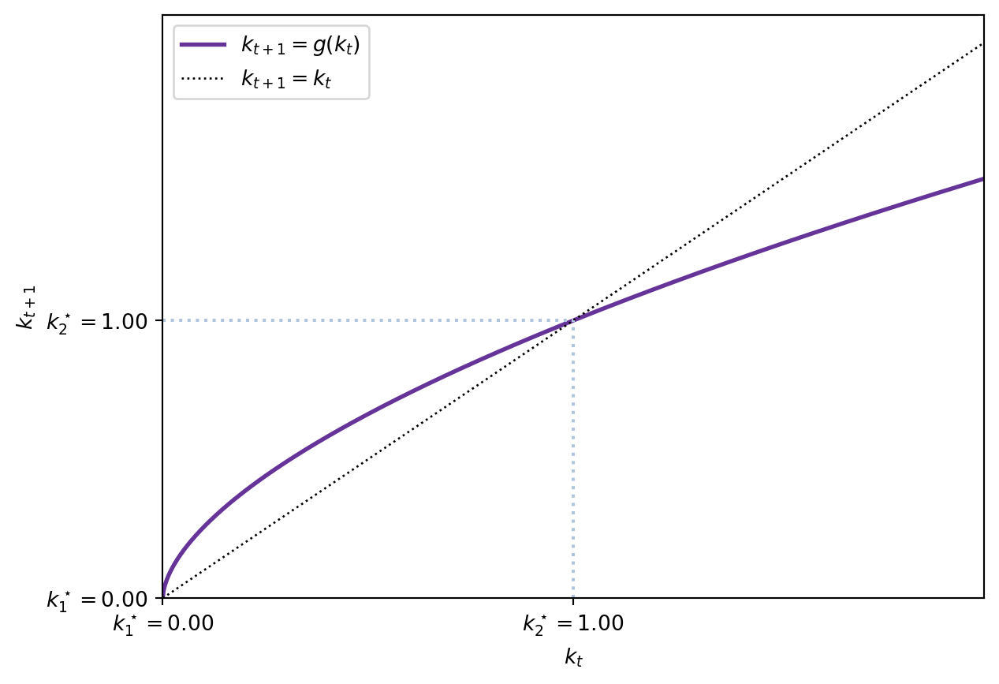
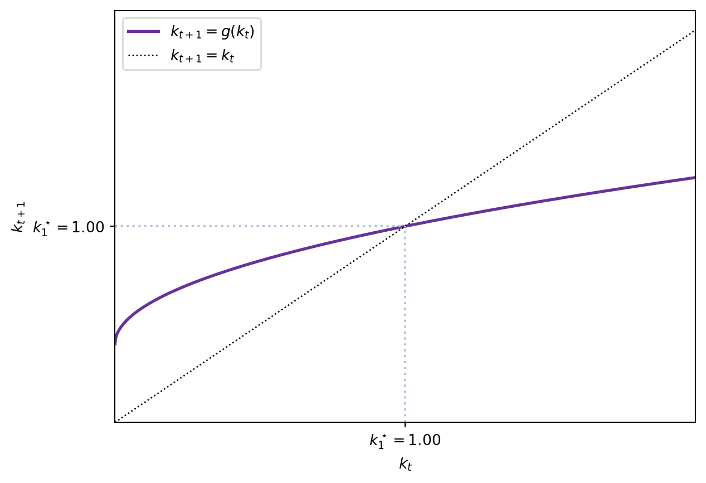
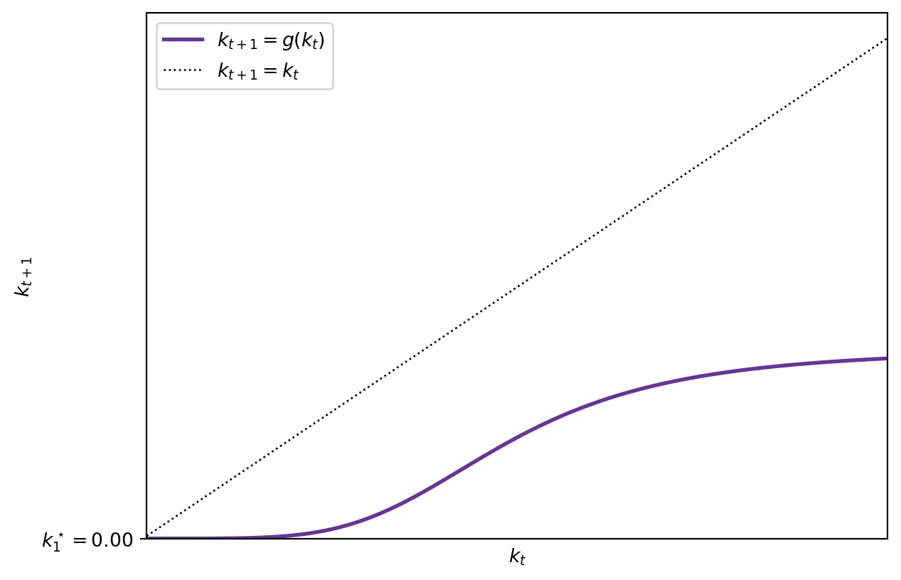
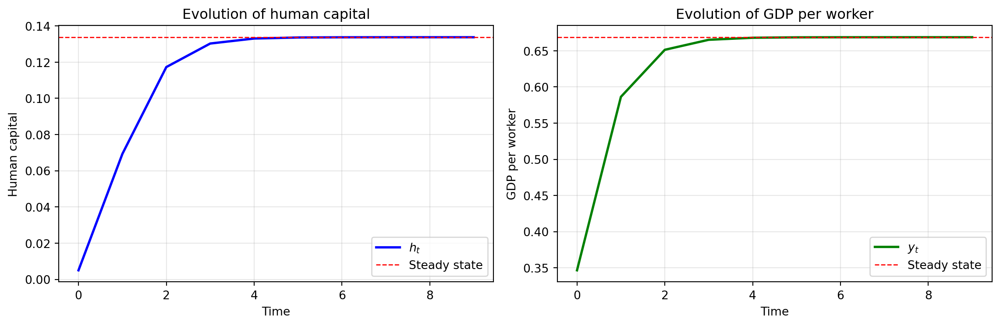

2 The OLG model
2.1 Introduction
Based on Croix and Michel (2009).
The overlapping generations (OLG) model focuses on the life-cycle: agents make decisions regarding how to consume and how much to save for retirement. Individuals live for two periods of time, work when young, and retire when old. This framework is particularly useful for studying intergenerational redistribution, allowing us to analyze:
- social security systems,
- education policies, and
- public debt.
The key feature of the OLG model is that agents are heterogeneous by age. In the first period of life, individuals are young and work. When old, they retire and live from savings. Hence, at any point in time, two types of agents with different budget constraints coexist: young and old.1
A basic reference for this model is Diamond (1965).
2.2 Preliminaries
In this model, time is discrete and extends from \(t=0, 1, \ldots, \infty.\) Individuals make decisions at points in time. We shall have initial conditions detailing the state of the economy at \(t=0.\)
2.2.1 Individuals live for two periods
Individuals live for two periods, meaning that, at every point in time, two generations are alive and overlap.
This is relevant: the economy goes on forever but individuals only operate during some periods. Hence, there will be infinite two-period-lived generations. In particular, at \(t=0\), we will have a young and an adult generation. This adult generation will die at the end of \(t=1\), the young generation will become adults and have children: the new young generation of \(t=2.\) Hence, we can represent the generations diagrammatically —in brackets I have denoted the year in which each generation was born.
| \(t=0\) | \(t=1\) | \(t=2\) | \(t=3\) | \(t=4\) | \(t=5\) |
|---|---|---|---|---|---|
| Old (t=-1) | Die | ||||
| Young(t=0) | Old (t=0) | Die | |||
| Young(t=1) | Old (t=1) | Die | |||
| Young(t=2) | Old (t=2) | Die | |||
| Young(t=3) | Old (t=3) | Die | |||
| Young(t=4) | Old (t=4) | ||||
| Young(t=5) |
To simplify the model, we assume that each adult born in \(t-1\) has \(n>-1\) children.
Note: we assume the number of children to be constant.
More complex set-ups include endogenous fertility (see Section 2.9).
These are the young population at time \(t\) Therefore, the total population \(N\) at time \(t\) is composed of adults and young people.
\[ N_{t} = \underbrace{N_{t-1}}_{\mathrm{Adults}} + \underbrace{N_{t-1}n}_{\mathrm{Youngs}} = N_{t-1}(1+n). \]
The total population at any time \(t\) is:
\[ N_{t} = N_{0}(1+n)^{t}. \]
2.3 Assumptions
2.3.1 Firms
We assume that a large number of identical firms populate the economy. Firms produce a single, homogeneous good using capital and labour. Each firm solves the following profit maximization problem:
\[ \max_{K_t, L_t} \quad F(K_t, L_t) - r_t K_t - w_t L_t \]
where \(F(K,L)\) is the production function, \(r_t\) is the rental rate of capital, and \(w_t\) is the wage rate.
We assume the production function satisfies standard neoclassical properties:
Assumption OLG 1: The production function \(F(K, L)\) is:
- OLG 1.1 Continuous and twice continuously differentiable,
- OLG 1.2 Strictly increasing in both arguments: \(F_{K}(K, L) > 0\) and \(F_{L}(K, L) > 0\),
- OLG 1.3 Strictly concave: \(F_{KK}(K, L) < 0\), \(F_{LL}(K, L) < 0\),
- OLG 1.4 Homogeneous of degree one (constant returns to scale),
- OLG 1.5 Satisfies the Inada conditions:
\[\begin{align*} \lim_{K \rightarrow 0} F_{K}(K, L) &= \lim_{L \rightarrow 0} F_{L}(K, L) = +\infty \\ \lim_{K \rightarrow +\infty} F_{K}(K, L) &= \lim_{L \rightarrow +\infty} F_{L}(K, L) = 0. \end{align*}\]
Since there are many firms competing in perfect competition, in equilibrium firms make zero profits and factors are paid their marginal products. The first-order conditions for profit maximization are:
\[\begin{align*} F_{K}(K_t, L_t) &= r_t \\ F_{L}(K_t, L_t) &= w_t \end{align*}\]
Since the production function \(F\) is homogeneous of degree one, we can write it in intensive (per-worker) terms:
\[ f(k) \equiv F\left(\frac{K}{L},1\right), \quad k \equiv \frac{K}{L}. \tag{2.1}\]
Using Euler’s theorem for homogeneous functions, we have \(F(K,L) = F_K(K,L) \cdot K + F_L(K,L) \cdot L\). Dividing by \(L\) and using the definition of \(k\):
\[ f(k) = f'(k) \cdot k + w \]
Therefore, the factor prices in intensive form are:
\[ r_{t} = f^{\prime}(k_{t}) \tag{2.2}\]
\[ w_{t} = f(k_t) - f^{\prime}(k_t) k_t. \tag{2.3}\]
2.3.1.1 Example: Cobb-Douglas production function
We now derive the key relationships for the Cobb-Douglas production function, which we will use throughout the rest of the chapter. Consider:
\[ F(K_t, L_t) = K_t^{\alpha} L_t^{1-\alpha}, \quad \alpha \in (0,1). \]
This function satisfies all our assumptions (OLG 1.1–1.5). In intensive form:
\[ f(k_t) = F\left(\frac{K_t}{L_t}, 1\right) = \left(\frac{K_t}{L_t}\right)^{\alpha} = k_t^{\alpha}. \]
The marginal products are:
\[\begin{align*} f'(k_t) &= \alpha k_t^{\alpha - 1} \\ f(k_t) - f'(k_t) k_t &= k_t^{\alpha} - \alpha k_t^{\alpha-1} \cdot k_t = (1-\alpha) k_t^{\alpha} \end{align*}\]
Therefore, under Cobb-Douglas production, the factor prices are:
\[\begin{align*} r_t &= \alpha k_t^{\alpha - 1} \\ w_t &= (1-\alpha) k_t^{\alpha} \end{align*}\] {#eq-cobb_douglas_prices}
Note: The parameter \(\alpha\) represents capital’s share in total output, while \((1-\alpha)\) is labour’s share. These shares remain constant regardless of the capital-labour ratio \(k_t\).
2.3.2 Households
Individuals live for two periods. As before, we assume perfect foresight for individuals.
Assumption OLG 2 Individuals have perfect foresight.
When young, they are endowed with one unit of labour that they supply inestastically.
Assumption OLG 3 Individuals supply one unit of labour inelastically when young. They receive the ongoing wage rate \(w_{t}\) and allocate this income between:
- current consumption \(c_{t}\),
- savings \(s_{t}\) that are invested in the firms.
Therefore, the budget constraint of a young individual in period \(t\) is:
\[ w_{t} = c_{t} + s_{t}. \]
Once an individual reaches old age the next period, he consumes his savings (plus the interest rate received), reproduces —exogenous fertility at rate \(n\)— and dies. Old people do not care about anything happening after death. Therefore, an agent has one unique choice:
- consumption when adult, \(d_{t+1}.\)
The budget constraint for this period is:
\[ s_{t}(1 - \delta + r_{t+1}) = d_{t+1}. \]
with \(\delta \in (0,1)\) being the capital depreciation rate.
Hence, an individual faces two budget constraints. However, we can collapse both into a unique intertemporal budget constraint.
2.3.2.1 The intertemporal budget constraint
In the economy, we have consumption as the numeraire. It is more convenient for us to combine the two budget constraints corresponding to young and old ages into one single constraint. Starting from
\[ \begin{cases} w_{t} = c_{t} + s_{t} \\ d_{t+1} = s_{t}(1 - \delta + r_{t+1}) = s_{t} R_{t+1} \end{cases} \tag{2.4}\]
where \(R_{t} \equiv 1 - \delta + r_{t+1}\) represents the return on savings, isolate \(s_{t}\) in the second equation and plug it in the first one:
\[ w_{t} = c_{t} + \frac{d_{t+1}}{R_{t+1}}. \tag{2.5}\]
The intertemporal budget constraint indicates that the total present value of income (\(w_{t}\), the only source of income) equals the total present value of expenditures. The present value of consumption when old \(d_{t+1}\) is discounted using the interest rate \(R_{t+1}.\)
It is clear that savings, as usual, will be a function of wages \(w\) and interests \(R.\) So will consumption at all periods of time.
2.3.2.2 Utility function
We suppose that the life-cycle utility function is additively separable:
\[ U(c,d) = u( c ) + \beta u(d),\, \beta \in(0,1) \tag{2.6}\]
where \(\beta \in (0,1)\) is the psychological discount factor. We assume that \(u( c )\) has the properties
Assumption OLG 4
- OLG 4.1 \(u^{\prime}( c ) > 0,\)
- OLG 4.2 \(u^{\prime \prime} ( c ) < 0,\)
- OLG 4.3 \(\lim_{c \rightarrow 0} u^{\prime}( c) = +\infty.\)
The last assumption \(\lim_{c \rightarrow 0} u^{\prime}( c ) = +\infty\) implies that an individual will always have a positive consumption —as long as he has enough income to finance it.
Another important implication of the choice of the utility formulation is that \(c\) and \(d\) are normal goods: the demand is not decreasing in wealth. It follows from additive separability and concavity.
2.3.3 The behaviour of individuals
At time \(t\), young individuals receive their wages, consume and save while maximising the utility function.
\[\begin{align*} & \max u(c_{t}) + \beta u(d_{t+1}) \\ & \mathrm{s.t.} \quad w_{t} = c_{t} + s_{t} \\ & \phantom{s.t.} \quad d_{t+1} = R_{t+1}s_{t} \\ & \phantom{s.t.} \quad c_{t} \geq 0, d_{t+1} \geq 0. \end{align*}\] {#eq-optimization_problem}
We have two possibilities to solve this problem:
2.3.3.1 Substitution
First, we can substitute \(c_{t}\) and \(d_{t+1}\) in the utility function, leading to:
\[ u(w_{t} - s_{t}) + \beta u(R_{t+1}s_{t}). \]
This function is strictly concave with respect to \(s_{t}\) because of our assumptions. The solution is the savings function:
\[ s_{t} = s(w_{t}, R_{t+1}). \]
The solution is interior as a consequence of the assumptions, and it is characterised by the first-order condition:
\[ u^{\prime}(w_{t} - s_{t}) = \beta R_{t+1} u^{\prime}(R_{t+1}s_{t}). \tag{2.7}\]
2.3.3.2 Lagrangian
Instead, we can use the intertemporal budget constraint and build the Lagrangian:
\[ \mathcal{L} = u(c_{t}) + \beta u(d_{t+1}) + \lambda_{t}(w_{t} - c_{t} - \frac{d_{t+1}}{R_{t+1}}). \]
The first order conditions imply that:
\[ u^{\prime}(c_{t}) = \lambda_{t}, \quad \beta u^{\prime}(d_{t+1}) = \frac{\lambda_{t}}{R_{t+1}}. \]
Combining both, we obtain Equation 2.7 again: \[ u^{\prime}(c_{t}) = \beta R_{t+1} u^\prime (d_{t+1}). \]
2.4 Examples of utility functions and savings behavior
To understand how individuals save, we now consider two specific cases that illustrate different aspects of the savings decision.
2.4.1 Example 1: Log-utility
The simplest case is logarithmic utility:
\[ u(c) = \log(c). \]
This is a special case of the CIES utility function with \(\sigma = 1\). From the Euler equation Equation 2.7, we have:
\[ \frac{1}{w_t - s_t} = \beta R_{t+1} \frac{1}{R_{t+1} s_t} \]
Simplifying:
\[ \frac{1}{w_t - s_t} = \frac{\beta}{s_t} \]
Solving for \(s_t\):
\[ s_t = \beta(w_t - s_t) \implies s_t(1 + \beta) = \beta w_t \]
Therefore, the savings function under log-utility is:
\[ s_t = \frac{\beta}{1+\beta} w_t. \tag{2.8}\]
Key properties:
- Savings are a constant fraction of wage income,
- Savings are independent of the interest rate \(R_{t+1}\),
- The marginal propensity to save is \(\frac{\beta}{1+\beta} \in (0,1)\).
This result shows that under log-utility, the wealth effect and substitution effect of interest rate changes exactly cancel out.
2.4.2 Example 2: General CIES utility
Now consider the constant intertemporal elasticity of substitution (CIES) utility function:
\[ u(c) = \frac{c^{1-\frac{1}{\sigma}}}{1-\frac{1}{\sigma}}, \quad \sigma > 0. \]
The parameter \(\sigma\) is the intertemporal elasticity of substitution: it measures the willingness to substitute consumption across time in response to changes in relative prices (the interest rate).
From the Euler equation:
\[ (w_t - s_t)^{-\frac{1}{\sigma}} = \beta R_{t+1} (R_{t+1} s_t)^{-\frac{1}{\sigma}} \]
Rearranging:
\[ \frac{d_{t+1}}{c_t} = \frac{R_{t+1} s_t}{w_t - s_t} = (\beta R_{t+1})^{\sigma}. \tag{2.9}\]
While we cannot solve explicitly for \(s_t\) in general, we can analyze how savings respond to changes in the interest rate using implicit differentiation.
2.4.2.1 The effect of interest rates on savings: implicit differentiation
To analyze how savings respond to changes in the interest rate, we use the implicit function theorem. Define the function \(\phi(s, w, R)\) from the Euler equation:
\[ \phi(s, w, R) = -u'(w-s) + \beta R u'(Rs) = 0. \]
This implicitly defines the savings function \(s = s(w, R)\). By the implicit function theorem:
\[ \frac{\partial s}{\partial R} = -\frac{\frac{\partial \phi}{\partial R}}{\frac{\partial \phi}{\partial s}}. \]
Computing the partial derivatives:
\[\begin{align*} \frac{\partial \phi}{\partial R} &= \beta u'(Rs) + \beta R u''(Rs) s = \beta u'(d)\left[1 + \frac{u''(d)}{u'(d)} Rs\right] \\ &= \beta u'(d)\left[1 - \frac{1}{\sigma(d)}\right] \end{align*}\]
where we use the fact that \(\sigma(d) = -\frac{u'(d)}{u''(d)d}\) is the elasticity of intertemporal substitution evaluated at \(d = Rs\).
Similarly:
\[ \frac{\partial \phi}{\partial s} = u''(w-s) + \beta R^2 u''(Rs) < 0 \]
by concavity of \(u\). Therefore:
\[ \frac{\partial s}{\partial R} = -\frac{\beta u'(d)\left[1 - \frac{1}{\sigma(d)}\right]}{u''(c) + \beta R^2 u''(d)}. \tag{2.10}\]
The sign of this derivative depends on whether \(\sigma(d) \gtreqqless 1\):
\[ \frac{\partial s}{\partial R} \begin{cases} > 0 & \text{if } \sigma > 1 \text{ (substitution effect dominates)} \\ = 0 & \text{if } \sigma = 1 \text{ (log-utility: effects cancel)} \\ < 0 & \text{if } \sigma < 1 \text{ (wealth effect dominates)} \end{cases} \]
Economic interpretation:
Two opposing forces determine the sign:
- Substitution effect: A higher interest rate makes future consumption cheaper relative to present consumption, encouraging more savings.
- Wealth effect: A higher interest rate means that the same savings yield more future consumption, so individuals can save less and still achieve their desired consumption when old.
When \(\sigma > 1\), individuals are willing to substitute consumption across time, and the substitution effect dominates. When \(\sigma < 1\), individuals prefer smooth consumption paths, and the wealth effect dominates. When \(\sigma = 1\) (log-utility), both effects exactly cancel.
2.5 Temporary equilibrium
Before turning to the intertemporal equilibrium and the analysis of the steady state, we study the temporary equilibrium that takes place every period.
Recall that firms use capital and labour in a perfectly competitive environment, paying factors their marginal products as derived in Equation 2.2 and Equation 2.3.
Labour market equilibrium: Only young individuals supply labour, and they do so inelastically (one unit each). During period \(t\) there are \(N_{t}\) young agents, hence labour supply equals \(N_{t}\). Equating this to labour demand from firms determines the wage rate: \[ w_{t} = f(k_t) - f'(k_t)k_t \equiv \omega(k_{t}). \]
Capital market: Only old individuals own capital (from their savings when young). The capital stock at time \(t\) equals the savings of the young generation from period \(t-1\): \[ K_t = N_{t-1} s_{t-1}. \] Since firms operate competitively with zero profits, they pay the rental rate: \[ R_t = f'(k_t). \]
Goods market: Total production at time \(t\) is: \[ Y_{t} = F(K_{t}, N_{t}) = N_{t} f(k_{t}). \]
Total demand for goods comes from:
- Old generation consumption: \(N_{t-1}d_{t}\)
- Young generation consumption and savings: \(N_{t}(c_{t}+s_{t})\)
Market clearing requires: \[ Y_{t} = N_{t-1}d_{t} + N_{t}(c_{t}+s_{t}). \]
Definition: A temporary equilibrium is a set \(\\{w_{t}, R_{t}, K_{t}, L_{t}, Y_{t}, k_{t}, c_{t}, s_{t}, d_{t}\\}\) that satisfies:
\[\begin{align*} w_{t} &= \omega(k_{t}), \\ R_{t} &= f^{\prime}(k_{t}), \\ L_{t} &= N_{t}, \\ Y_{t} &= N_{t}f(k_{t}), \\ Y_{t} &= N_{t-1}d_t + N_{t}(c_{t}+s_{t}), \\ c_{t} &= w_{t} - s_{t}, \\ s_{t} &= s(\omega(k_{t}),R_{t+1}), \\ d_{t} &= R_{t}s_{t-1}. \end{align*}\]
The existence of a temporary equilibrium is guaranteed because all functions are continuous and well-defined.
2.6 Intertemporal equilibrium with perfect foresight
The equilibrium equation that links consecutive periods is the capital accumulation equation. In particular, the savings of young individuals at period \(t\) are transformed into productive capital at \(t+1.\)
2.6.1 From aggregate to per-capita capital accumulation
Note: In the OLG model, it is essential to carefully distinguish between aggregate and per-capita variables. We work through this transformation step by step.
Step 1: Aggregate capital accumulation
The capital stock at time \(t+1\) equals the total savings of all young individuals at time \(t\):
\[ K_{t+1} = N_{t} s_{t}. \]
Since there are \(N_t\) young individuals at time \(t\), each saving \(s_t\), total savings equal \(N_t s_t\).
Step 2: Definition of per-capita capital
The capital-labour ratio (per-capita capital) at time \(t+1\) is defined as:
\[ k_{t+1} = \frac{K_{t+1}}{N_{t+1}}. \]
Important: Note that we divide by \(N_{t+1}\) (the number of young workers at \(t+1\)), not by \(N_t\). This is because \(k_{t+1}\) represents capital per young worker at time \(t+1\).
Step 3: Combining both equations
Substituting \(K_{t+1} = N_t s_t\) into the definition of \(k_{t+1}\):
\[ k_{t+1} = \frac{K_{t+1}}{N_{t+1}} = \frac{N_{t} s_{t}}{N_{t+1}}. \]
Step 4: Using population growth
Recall from the preliminaries that \(N_{t+1} = N_t(1+n)\), where \(n\) is the population growth rate.Substituting:
\[ k_{t+1} = \frac{N_{t} s_{t}}{N_t(1+n)} = \frac{s_{t}}{1+n}. \]
Therefore, the per-capita capital accumulation equation is:
\[ k_{t+1} = \frac{1}{1+n} s_{t}. \tag{2.11}\]
Interpretation: This equation shows that per-capita capital growth depends on:
- Individual savings \(s_t\) (the numerator),
- Population growth \(n\) (the denominator).
Even if individuals save a constant amount, per-capita capital can fall if population grows too fast.
2.6.2 The intertemporal equilibrium
Now we incorporate the equilibrium conditions from the markets. Young individuals at time \(t\) choose savings based on:
- Their wage income: \(w_t = \omega(k_t)\)
- Their expectation of the future interest rate: \(R_{t+1} = f'(k_{t+1})\)
Under perfect foresight, individuals correctly anticipate \(R_{t+1}\). Therefore, \(s_t = s(\omega(k_t), f'(k_{t+1}))\), and the capital accumulation equation becomes:
\[ k_{t+1} = \frac{1}{1+n} s(\omega(k_t), f'(k_{t+1})). \tag{2.12}\]
Definition: Given an initial capital stock \(k_{0} = K_{0} / N_{-1}\), an intertemporal equilibrium with perfect foresight is a sequence of temporary equilibria \(\\{k_t\\}_{t=0}^{\infty}\) that satisfies Equation 2.12 for all \(t \geq 0\).
Key observation: Equation Equation 2.12 is an implicit equation for \(k_{t+1}\) as a function of \(k_t\), because \(k_{t+1}\) appears on both sides (inside the savings function through \(f'(k_{t+1})\)).
2.6.3 Why explicit solutions are difficult
For general utility and production functions, we cannot write an explicit formula \(k_{t+1} = g(k_t)\).This is because:
- The savings function \(s(w, R)\) depends on the future interest rate \(R_{t+1} = f'(k_{t+1})\),
- This creates an implicit relationship that typically cannot be solved algebraically.
Exception: Under log-utility, savings are independent of the interest rate (Equation 2.8), so \(s_t = \frac{\beta}{1+\beta}w_t\) In this case, we can write an explicit capital accumulation equation:
\[ k_{t+1} = \frac{1}{1+n} \cdot \frac{\beta}{1+\beta} \omega(k_t). \tag{2.13}\]
This is a major simplification that we will exploit when analyzing dynamics and steady states.
2.6.4 Existence and uniqueness (brief remarks)
The implicit nature of Equation 2.12 raises questions about existence and uniqueness:
- Does a solution \(k_{t+1}\) exist for every \(k_t\)?
- Is this solution unique?
For our purposes, we note the following results (see Croix and Michel (2009, Ch. 2) for detailed proofs):
Existence: Under our assumptions (OLG 1-4), at least one temporary equilibrium exists for any \(k_t \geq 0\).
Uniqueness: Uniqueness is guaranteed if the intertemporal elasticity of substitution is sufficiently large. A sufficient condition is \(\sigma \geq 1\). When \(\sigma < 1\), multiple equilibria can arise, leading to indeterminacy and potential coordination failures.
For the remainder of this chapter, we assume \(\sigma \geq 1\), which ensures:
- Unique temporary equilibria,
- Monotonic dynamics: \(k_{t+1} = g(k_t)\) is a well-defined function,
- Tractable analysis of steady states and stability.
2.7 Steady states
A steady state is a capital-labour ratio \(\bar{k}\) that remains constant over time: if \(k_t = \bar{k}\), then \(k_{t+1} = \bar{k}\). From Equation 2.12, a steady state satisfies: \[ \bar{k} = \frac{1}{1+n}s(\omega(\bar{k}), f'(\bar{k})). \tag{2.14}\]
This equation may have multiple solutions. We consider two important cases.
2.7.1 The autarky steady state: \(\bar{k} = 0\)
If \(f(0) = 0\) (production requires capital), then \(\bar{k} = 0\) is always a steady state. When \(k_t = 0\):
- Wages are zero: \(\omega(0) = 0\),
- Young individuals have no income, hence cannot save: \(s_t = 0\),
- Next period’s capital remains zero: \(k_{t+1} = 0\).
This is called the autarky steady state or poverty trap. Whether the economy converges to this state depends on the initial conditions and the stability properties.
2.7.2 Interior steady states: \(\bar{k} > 0\)
The economy may also have positive steady states where \(\bar{k} > 0\). Unlike the autarky state, these steady states feature positive production, consumption, and welfare. Finding interior steady states analytically requires solving Equation 2.14, which is typically impossible for general functions. However, with specific functional forms, we can make progress.
Similarly, the Cobb-Douglas case \(\rho \rightarrow 0\) also has zero as a steady state. However, it is unstable.
2.7.3 Example: Cobb-Douglas production and log-utility
We now work through the complete analysis for the benchmark case: Cobb-Douglas production with log-utility. This combination allows us to derive explicit solutions and fully characterize the dynamics.
Setup:
- Production: \(f(k_t) = k_t^{\alpha}\), \(\alpha \in (0,1)\)
- Utility: \(u(c) = \log(c)\)
- Wages: \(w_t = (1-\alpha) k_t^{\alpha}\) (from ?eq-cobb_douglas_prices)
- Savings: \(s_t = \frac{\beta}{1+\beta} w_t\) (from Equation 2.8)
Capital accumulation:
Combining Equation 2.13 with the Cobb-Douglas wage:
\[ k_{t+1} = \frac{1}{1+n} \cdot \frac{\beta}{1+\beta} \cdot (1-\alpha) k_t^{\alpha}. \]
Define \(\phi \equiv \frac{\beta(1-\alpha)}{(1+n)(1+\beta)}\), then:
\[ k_{t+1} = g(k_t) = \phi k_t^{\alpha}. \tag{2.15}\]
This is an explicit, autonomous difference equation. The dynamics are fully determined by the function \(g(k_t)\).
Finding steady states:
A steady state \(\bar{k}\) satisfies \(\bar{k} = g(\bar{k}) = \phi \bar{k}^{\alpha}\). Rearranging:
\[ \bar{k}^{1-\alpha} = \phi. \]
This equation has two solutions:
- Autarky: \(\bar{k}_1 = 0\)
- Interior: \(\bar{k}_2 = \phi^{\frac{1}{1-\alpha}} = \left[\frac{\beta(1-\alpha)}{(1+n)(1+\beta)}\right]^{\frac{1}{1-\alpha}}\)
The interior steady state \(\bar{k}_2\) is positive and economically meaningful.

2.8 Stability analysis: The Hartman-Grobman theorem
To determine whether the economy converges to a steady state, we analyze local stability using the Hartman-Grobman theorem. This theorem states that the local behavior of a nonlinear dynamical system near a steady state is determined by its linearization at that point.
For a one-dimensional discrete-time system \(k_{t+1} = g(k_t)\), the linearization around a steady state \(\bar{k}\) is:
\[ k_{t+1} - \bar{k} \approx g'(\bar{k})(k_t - \bar{k}). \]
The eigenvalue of this linear system is simply \(\lambda = g'(\bar{k})\). The steady state is:
- Locally stable (attractive) if \(|\lambda| < 1\),
- Unstable (repelling) if \(|\lambda| > 1\),
- Indeterminate if \(|\lambda| = 1\) (requires higher-order analysis).
Note: For our one-dimensional system, the “Jacobian matrix” is just the scalar \(g'(\bar{k})\), and the “eigenvalue” is this scalar itself.
2.8.1 Stability of the autarky steady state
For \(\bar{k}_1 = 0\):
\[ g'(k) = \phi \alpha k^{\alpha - 1}. \]
Taking the limit as \(k \to 0\):
\[ \lim_{k \to 0} g'(k) = \lim_{k \to 0} \phi \alpha k^{\alpha - 1} = +\infty \]
because \(\alpha - 1 < 0\). Since \(|g'(0)| = +\infty > 1\), the autarky steady state is locally unstable.
Interpretation: If the economy starts with any \(k_0 > 0\) (even arbitrarily small), it will move away from \(k = 0\) toward the interior steady state.
2.8.2 Stability of the interior steady state
For \(\bar{k}_2 = \phi^{\frac{1}{1-\alpha}}\):
\[ g'(\bar{k}_2) = \phi \alpha \bar{k}_2^{\alpha - 1}. \]
Substitute \(\bar{k}_2^{1-\alpha} = \phi\), which implies \[ \bar{k}_2^{\alpha-1} = \left(\bar{k}_2^{1-\alpha}\right)^{-1} \cdot \bar{k}_2^{0} = \frac{1}{\phi}. \]
Therefore:
\[ g'(\bar{k}_2) = \phi \alpha \cdot \frac{1}{\phi} = \alpha. \]
Since \(\alpha \in (0,1)\), we have \(|g'(\bar{k}_2)| = \alpha < 1\). The interior steady state is locally stable.
Interpretation: For any initial capital \(k_0\) in a neighborhood of \(\bar{k}_2\), the economy converges to \(\bar{k}_2\) over time.
2.8.3 Global dynamics
We can say more about global behavior:
For any \(k_0 > 0\): The function \(g(k) = \phi k^{\alpha}\) is increasing and concave. Since the autarky steady state is unstable and the interior steady state is stable, any initial \(k_0 > 0\) converges to \(\bar{k}_2\).
Monotonic convergence:
- If \(k_0 < \bar{k}_2\): The sequence \(\\{k_t\\}\) is increasing and converges from below.
- If \(k_0 > \bar{k}_2\): The sequence \(\\{k_t\\}\) is decreasing and converges from above.
Rate of convergence: The speed of convergence is determined by \(\alpha\). Smaller \(\alpha\) (lower capital share) implies faster convergence.
Graphical representation: The dynamics are illustrated by plotting \(k_{t+1} = \phi k_t^{\alpha}\) against the 45-degree line \(k_{t+1} = k_t\).

Single, non-autarky steady state This steady state is characterized by a unique positive capital level \(\bar{k} > 0\). This configuration requires \(f(0) > 0\). With a CES production function, capital and labour must be substitutes, this is, \(< 0 \rho < 1\): \((\alpha k^\rho + (1-\alpha))^{\frac{1}{\rho}}.\)

Only an autarky steady state In this case, \(f(0) = 0\) is required so that the autarky steady state can exist. Moreover, it requires \(f(k_{t+1}) < f(k_{t})\). This type of setup requires \(\rho < 0\), this is, complementarity between capital and labor and low levels of output given the inputs.

2.9 Application: Fertility and education choices
So far, we have treated the population growth rate \(n\) as exogenous. However, households make deliberate choices about fertility and investment in children’s human capital. These decisions are central to understanding economic development and the demographic transition.2
We now extend the model to incorporate the quality-quantity trade-off: parents must decide between having more children (quantity) and investing more in each child’s education (quality). In this version, we abstract from capital accumulation to focus on human capital dynamics.
2.9.1 Model setup
Production: Output is produced using human capital and raw labor: \[ Y_t = H_t^{\alpha} L_t^{1-\alpha} \tag{2.16}\]
where \(H_t\) is the aggregate level of human capital in the economy and \(L_t\) is raw labor input. The output per worker is: \[ y_t = y_t^{\alpha}. \]
Since workers own both factors of production (their human capital and their raw labor), they receive the entire output as wages: \[ w_t = h_t^{\alpha}. \tag{2.17}\]
Alternatively, if we let \(L_t\) be the raw labor (hours) supplied by workers and each supplies \(l_t\) units, then \(L_t = N_t l_t\) where \(N_t\) is the number of workers. Similarly, if each worker has human capital \(h_t\), then \(H_t = h_t L_t = h_t N_t l_t\). Thus, total production is:
\[ Y_t = H_t^{\alpha} L_t^{1-\alpha} = (h_t N_t l_t)^{\alpha} (N_t l_t)^{1-\alpha} = h_t^{\alpha} (N_t l_t) = h_t^{\alpha} L_t. \]
Thus, output per worker is \(y_t = h_t^{\alpha}\). Because workers own their human capital, they receive the entire output as wages: \(w_t = h_t^{\alpha}\).
Note
If we wanted to have two factors of production (human capital and raw labor) paid separately, under a Cobb-Douglas production function, like \(Y = L^{\beta} H^{1-\beta}\), then the wage paid to raw labor would be:
\[ w_{raw} = \beta \left(\frac{Y}{L}\right). \]
and the return to human capital would be:
\[ r_{human} = (1-\beta) \left(\frac{Y}{H}\right). \]
Because a worker supplies 1 unit of raw labor and has \(h\) units of human capital, their total income would be:
\[\begin{align*} w =& w_{raw} + r_{human} h = \beta \left(\frac{Y}{L}\right) + (1-\beta) \left(\frac{Y}{H}\right) h \\ =& \beta \left(\frac{Y}{L}\right) + (1-\beta) \left(\frac{Y}{h L}\right) h = y . \end{align*}\]
Preferences: Households live for one period and care about their own consumption, the number of children, and the human capital of their children: \[ U_t = \log(c_t) + \gamma \log(n_t e_{t+1}^{\beta}) \tag{2.18}\]
where:
- \(c_t\) is consumption,
- \(n_t \geq 0\) is the number of children,
- \(e_{t+1} \geq 0\) is the education (human capital) investment per child,
- \(\gamma > 0\) measures the weight on children,
- \(\beta \in (0,1)\) captures the relative importance of child quality.
Budget constraint: Raising children requires time. Each child requires \(\phi > 0\) units of parental time, reducing time available for work. The household’s time endowment is normalized to 1, so time available for work is \(1 - \phi n_t\).
Parents allocate their wage income between consumption and education investment: \[ w_t(1 - \phi n_t) = c_t + n_t e_{t+1}. \tag{2.19}\]
Feasibility: We require \(\phi n_t \leq 1\) to ensure non-negative labor supply.
2.9.2 Household optimization
Substituting the budget constraint into the utility function: \[ U_t = \log[w_t(1 - \phi n_t) - n_t e_{t+1}] + \gamma \log(n_t e_{t+1}^{\beta}). \]
Using properties of logarithms: \[ U_t = \log[w_t(1 - \phi n_t) - n_t e_{t+1}] + \gamma \log(n_t) + \gamma \beta \log(e_{t+1}). \tag{2.20}\]
First-order conditions:
With respect to \(n_t\): \[ \frac{w_t \phi + e_{t+1}}{w_t(1 - \phi n_t) - n_t e_{t+1}} = \frac{\gamma}{n_t} \tag{2.21}\]
With respect to \(e_{t+1}\): \[ \frac{n_t}{w_t(1 - \phi n_t) - n_t e_{t+1}} = \frac{\gamma \beta}{e_{t+1}} \tag{2.22}\]
Let \(c_t = w_t(1 - \phi n_t) - n_t e_{t+1}\). Then the FOCs become:
From Equation 2.21: \[ \frac{w_t \phi + e_{t+1}}{c_t} = \frac{\gamma}{n_t} \implies \gamma c_t = n_t(w_t \phi + e_{t+1}). \tag{2.23}\]
From Equation 2.22: \[ \frac{n_t}{c_t} = \frac{\gamma \beta}{e_{t+1}} \implies \gamma \beta c_t = n_t e_{t+1}. \tag{2.24}\]
2.9.3 Solving for fertility and education
From Equation 2.23 and Equation 2.24, we can isolate the denominator \(c_t\) in both.
From Equation 2.23: \[ c_t = \frac{n_t (w_t \phi + e_{t+1})}{\gamma} \]
And from Equation 2.24:
\[ c_t = \frac{n_t e_{t+1}}{\gamma \beta} \]
Thus, equating these two expressions for \(c_t\):
\[ \frac{n_t (w_t \phi + e_{t+1})}{\gamma} = \frac{n_t e_{t+1}}{\gamma \beta}. \]
Dividing both sides by \(n_t\) (assuming \(n_t > 0\), which will always be the case due to the logarithm in the utility) and multiplying through by \(\gamma\):
\[ w_t \phi + e_{t+1} = \frac{e_{t+1}}{\beta}. \]
Rearranging:
\[ e_{t+1} = \frac{\beta \phi}{1 - \beta} w_t. \]
Next, substituting \(e_{t+1}\) back into either expression for \(c_t\) (we use Equation 2.24):
\[ \frac{w_t \phi + e_{t+1}}{w_t (1 - \phi n_t) - n_t e_{t+1}} = \frac{\gamma}{n_t}. \]
Thus,
\[ \frac{w_t \phi +\frac{\beta w_t \phi}{1 - \beta}}{w_t (1 - \phi n_t) - n_t \frac{\beta w_t \phi}{1 - \beta}} = \frac{\gamma}{n_t}. \]
Dividing numerator and denominator on the left-hand side by \(w_t\):
\[ \frac{\phi +\frac{\beta\phi}{1 - \beta}}{(1 - \phi n_t) - n_t \frac{\beta \phi}{1 - \beta}} = \frac{\gamma}{n_t}. \]
Multiplying the left-hand side numerator and denominator by \((1 - \beta)\) to clear the fraction:
\[ \frac{\phi (1-\beta) + \beta\phi}{(1 - \beta)(1 - \phi n_t) - n_t \beta \phi} = \frac{\gamma}{n_t}. \]
Rearranging:
\[ \phi n = \gamma (1-\beta)(1-\phi n) - \gamma n \beta \phi. \]
Collecting terms involving \(n_t\) on the left-hand side and isolating \(n_t\):
\[ n_t = \frac{\gamma(1-\beta)}{(1+\gamma) \phi}. \]
Key results:
Fertility is constant: \(n_t = \frac{\gamma(1-\beta)}{(1+\gamma) \phi}\) depends only on parameters.
Education is proportional to wages: \(e_{t+1} = \frac{\beta \phi}{1-\beta} w_t\). As the economy develops and wages rise, parents invest more in each child’s human capital.
2.9.4 Human capital dynamics
Since wages equal \(w_t = h_t^{\alpha}\) and human capital equals the education received in the previous period (\(h_t = e_t\)), we have: \[ e_{t+1} = \frac{\beta \phi}{1-\beta} h_t^{\alpha}. \tag{2.25}\]
This is a first-order difference equation in education/human capital. In the next period: \[ h_{t+1} = e_{t+1} = \frac{\beta \phi}{1-\beta} h_t^{\alpha}. \tag{2.26}\]
Let \(A = \frac{\beta \phi}{1-\beta}\). Then: \[ h_{t+1} = A h_t^{\alpha}. \tag{2.27}\]
Steady state: At steady state, \(h_{t+1} = h_t = h^*\): \[ h^* = A (h^*)^{\alpha} \implies (h^*)^{1-\alpha} = A \implies h^* = A^{\frac{1}{1-\alpha}}. \tag{2.28}\]
Stability: Deriving the dynamic equation Equation 2.27 and evaluating at the steady state: \[ \frac{\partial h_{t+1}}{\partial h_t} = A \alpha h_t^{\alpha - 1}. \]
At steady state: \[ \left. \frac{\partial h_{t+1}}{\partial h_t} \right|_{h_t = h^\star} = A \alpha (h^*)^{\alpha - 1} = A \alpha \cdot \frac{1}{A} = \alpha. \]
Since \(\alpha \in (0,1)\), this converges to the steady state from any initial condition.
2.9.5 GDP per worker dynamics
Since \(y_t = h_t^{\alpha}\), GDP per worker evolves according to: \[ y_t = h_t^{\alpha} = \left( A h_{t-1}^{\alpha} \right)^{\alpha} = A^{\alpha} h_{t-1}^{\alpha^2}. \tag{2.29}\]
More generally, from \(h_t = A h_{t-1}^{\alpha}\): \[ y_t = h_t^{\alpha}. \]
At steady state: \[ y^\star = (h^\star)^{\alpha} = A^{\frac{\alpha}{1-\alpha}}. \tag{2.30}\]

2.9.6 Discussion
This application illustrates how the OLG framework can be extended to analyze human capital accumulation through education choices:
Endogenous growth: Unlike models with exogenous human capital, here education investments respond to wages, creating a feedback loop between human capital and productivity.
Quality-quantity trade-off: Parents optimally choose fertility \(n_t = \frac{\gamma(1-\beta)}{(1+\gamma) \phi}\) and education per child \(e_{t+1} = \frac{\beta \phi w_t}{1-\beta}\). The parameter \(\beta\) governs the relative importance of quality vs. quantity.
Convergence: The economy converges to a steady state level of human capital \(h^* = \left(\frac{\beta \phi}{1-\beta}\right)^{\frac{1}{1-\alpha}}\) and GDP per worker \(y^* = (h^*)^{\alpha}\).
Policy implications: Policies that reduce the time cost of children (\(\phi\)) or increase the value of education (\(\beta\)) can raise long-run human capital and income levels.
For further reading on these topics and empirical evidence, see the comprehensive survey by Doepke et al. (2023).